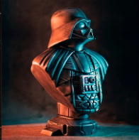
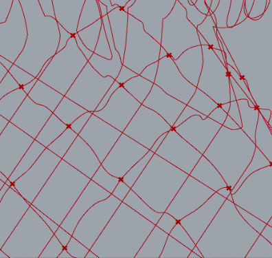

Final Laser‑Cut Assembly

Original 3D Model for Reference
Project Overview
In this summer Parametric Scripting & Design course, I built a Grasshopper workflow that converts a 3D model into interlocking 2D contour slices that can be laser‑cut and assembled into a physical sculpture. [file:62]
After experimenting with several Star Wars models, I settled on a solid Darth Vader bust and developed a script that automatically generates orthogonal contour sets, computes their intersections, and creates slide‑together joints for corrugated cardboard fabrication. [file:62][file:63]
The result is a parametric pipeline: swap in any suitable 3D mesh, adjust a few spacing and thickness parameters, and output ready‑to‑cut geometry for a layered 3D representation built entirely from 2D parts. [file:62]
Design Methodology
From 3D Mesh to Contours
The process begins by importing a watertight mesh into Rhino and generating evenly spaced contour curves in two orthogonal directions using Grasshopper’s contour components. These contour families define the profiles of the vertical and horizontal slices that will interlock in the final assembly. [file:62]

Figure: Orthogonal contour sets generated from the Darth Vader model.
Intersection Logic & Slot Placement
A custom Grasshopper definition locates all intersections between the orthogonal contour sets, then uses those points to position and size the slots where slices will interlock. Intersection points are offset and reconstructed so that helper lines can find a second intersection on the opposite contour edge, giving a local thickness for the joint. [file:62]
Midpoints along these helper lines become the centers of rectangular slot profiles, which are oriented along each contour direction and moved into place using vector transforms. Careful list management, culling, and data matching ensure each slot is paired with the correct contour segment. [file:62]
Grasshopper Development & Fabrication
Grasshopper Workflow
- Generate two contour sets with adjustable spacing for model resolution.
- Use Curve–Curve Intersect components to find all contour intersections. [file:62]
- Offset and deconstruct intersection points to build helper lines across each contour thickness.
- Compute slot midpoints and move parametric slot geometry to each location. [file:62]
- Resolve overhang issues by manually adjusting selected Z‑heights via cull patterns and custom lists.
- Join each contour curve and its slots into a single closed profile ready for the laser cutter. [file:62]
Materials & Equipment
- Software: Rhino 3D + Grasshopper (visual scripting). [file:63]
- Material: Corrugated cardboard sheets sourced from a local art supply store. [file:62]
- Laser Cutter: Epilog 60W, large bed for full contour layouts. [file:63]
- Empirical Settings: 15 speed, 30 power, 50 frequency to achieve clean cuts while minimizing fire risk. [file:62]

Figure: Final Grasshopper definition for contour intersections, slot placement, and joined cut paths.
Tolerancing & Assembly
A key part of the project was dialing in slot tolerances so the contours would slide together without being either floppy or impossible to assemble. The slot width started at 5 mm to match nominal cardboard thickness, but assemblies were too loose and lacked structural rigidity. [file:62]
Reducing the width to 3 mm over‑constrained the joints, causing local crushing and making later slices nearly impossible to install. After several test cuts and assemblies, a 4 mm slot width provided the right balance of friction fit, rigidity, and assembly effort. [file:62]

Figure: Tolerance test coupons comparing 3 mm, 4 mm, and 5 mm slot widths.
Final Outcome
- Robust 3D Darth Vader sculpture assembled entirely from 2D contour slices. [file:62]
- Parametric Grasshopper definition that can adapt to new models and materials.
- Validated laser settings and tolerances for repeatable corrugated‑cardboard builds.
Design Challenges & Key Learnings
Data Management in Grasshopper
Matching intersection points, control points, and slot geometry required careful use of cull patterns, list operations, and data tree management. When the lists were mis‑aligned, the resulting slot lines looked like random scribbles across the model, highlighting how important index discipline is in visual scripting. [file:62]
Handling Overhangs & Multi‑Level Contours
Overhanging geometry created cases where a single helper line intersected multiple contours, potentially cutting through more than one slice. The solution was to selectively adjust Z‑heights for specific intersection points and use cull patterns to target only the intended contour level. [file:62]
Empirical Fabrication Knowledge
The recommended Epilog settings cut the cardboard but frequently ignited small fires, so I iterated speed, power, and frequency to find a combination that produced full‑depth cuts without damaging the workpiece. That empirical tuning is now baked into the project documentation for future builds. [file:62][file:63]
Skills Developed
Parametric Modeling
Built a reusable Grasshopper definition for contour generation, slot placement, and automated join operations, adaptable to new meshes and materials.
Digital Fabrication
Translated parametric output into clean laser‑cut parts, including layout, kerf compensation, and safe cutting settings for corrugated cardboard.
Geometry Processing
Worked extensively with intersections, offsets, vector transforms, and data‑tree operations to construct manufacturable 2D geometry from 3D models.
Design for Assembly
Tuned joint tolerances and slot patterns to achieve a stable, self‑supporting structure that can be assembled quickly without adhesives.